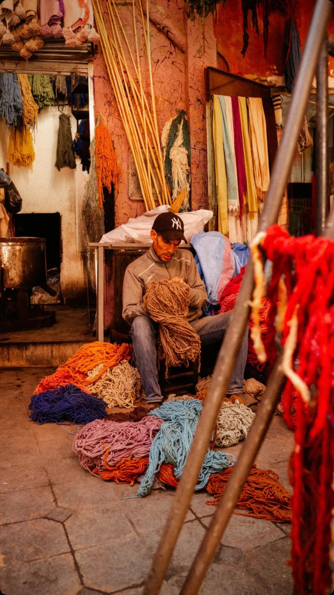
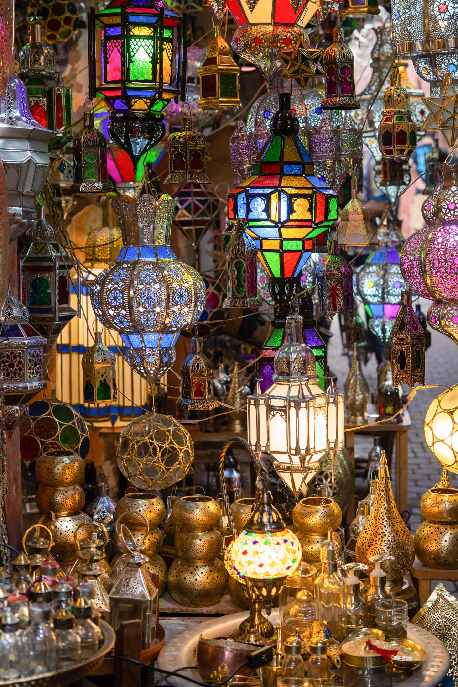
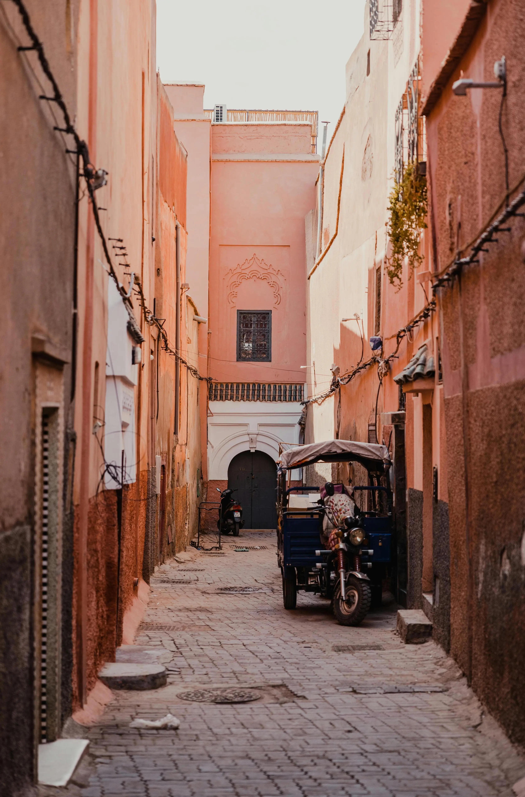

Day trips & excursions
Discover the Atlas Mountains, Agafay Desert, Essaouira and more with a trip arranged around your plans.
Explore excursions →
Welcome to The Secret Marrakech. Explore the medina, meet its artisans and discover the city through the eyes of a licensed local guide.
From hidden medina lanes and centuries-old crafts to the flavors of the souks, discover the stories and people that make this city unforgettable.
Small-group and private experiences led by a local guide.
Make planning your time in Marrakech and Morocco easier.
Discover the Atlas Mountains, Agafay Desert, Essaouira and more with a trip arranged around your plans.
Explore excursions →Share your interests and schedule for a personalized Marrakech or Morocco itinerary.
View our services →Ask about airport transfers, taxis, restaurant bookings and trusted local recommendations.
See how we can help →“Highly recommend! Chafik was an excellent guide through Marrakech—extremely knowledgeable and very friendly.”
Guest review · Airbnb“The best way we could have started our trip. He showed us the real city and made the medina come alive.”
Guest review · Tripadvisor“Such a calm, kind and knowledgeable guide. Appreciated every minute of it. Highly recommended!”
Guest review · Airbnb




Get in touch by WhatsApp or email for tours, services and local recommendations.
Marrakech, Morocco · +212 628 921 377